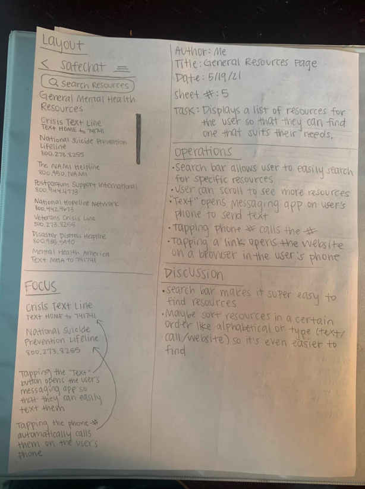

Where support meets convenience, one chat at a time. SafeChat is a mobile app designed to bridge the gap between readily accessible, on-demand mental health support and the unique challenges faced by University of Washington students.
USER RESEARCH
Our research delved into the hurdles university students encounter when seeking mental health resources. Through in-depth user interviews, we discovered prevalent issues:
- Lack of awareness about available resources
- Accessibility barriers including cost and availability
- A preference for indirect communication channels
- Skepticism toward AI-based mental health support
USER PERSONAS

Erica Persona

Mike Persona
USER JOURNEY MAP

Mike's User Journey Map
STORYBOARDS

Storyboard created with Storyboard That

Storyboard created with Storyboard That

Storyboard created with images, where I dressed up as Mike
INTERFACE SKETCHES

1. Homepage

2. Instant Support

3. Scheduled Support

4. Journaling
5. Additional Resources
LOW-FIDELITY WIREFRAMES


ANNOTATED WIREFRAMES
I annotated each wireframe, providing an in-depth depiction of the app's functionalities and interactions.
HIGH-FIDELITY PROTOTYPE
Our team developed high-fidelity prototypes, undergoing significant iterations to enhance visual appeal and user interactions. Later, I undertook an independent iterative redesign, focusing on refining the UI and improving user experience.
My Team's Original UI


My Redesigned UI


REFLECTION
The design journey was a learning curve that emphasized the importance of early-stage work, user feedback, and thorough usability testing. Challenges arose from inexperience, particularly in translating insights into personas and developing AI-based support. However, adapting to user concerns led to a successful pivot in the design process.
Our project highlighted the significance of inclusivity and accessibility. While our personas were diverse, we realized the need for broader representation of user groups. A more extensive user research phase would have ensured a more inclusive design.
My independent redesign process underscored the importance of iterative design, incorporating new insights to refine both aesthetics and usability. Collaborative efforts proved rewarding, showcasing the power of teamwork in shaping SafeChat into a refined, user-centric platform.